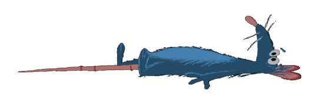

Citations
Images

CDR. (2017, October 2). Art of ratatouille. Character Design References. https://characterdesignreferences.com/art-of-animation-4/art-of-ratatouille
DisneyLover. (n.d.). Ratatouille (2007) [4K]. Animation Screencaps.com. https://animationscreencaps.com/4k-ratatouille-2007/page/97#box-1/22/4k-ratatouille-animationscreencaps.com-17302.jpg?ssl=1
RatatouilleTM in Concert. Vancouver Symphony Orchestra. (2023, July 12). https://www.vancouversymphony.ca/event/ratatouille-in-concert/
Remy overlooking Paris. (2017). Substream Magazine. Retrieved August 1, 2023, from https://substreammagazine.com/2017/06/ten-years-later-ratatouille/
Robertkondo. (2016, January 29). Robert Kondo. Tumblr. https://robertkondo.tumblr.com/post/138270007973/ratatouille-concepts
scurviesdisneyblog. (2018, June 20). The Art Behind The Magic. Tumblr. https://scurviesdisneyblog.tumblr.com/post/175070446018/ratatouille-visual-development-by-dominique-louis
YouTube thumbnail of concept art of Ratatouille. (2016). Youtube. Retrieved August 1, 2023, from https://www.youtube.com/watch?v=RJ4v8jINUA4
Code References
CSS Gradient. (n.d.). https://cssgradient.io/
CSS Grid Layout Module. W3 Schools. (n.d.). https://www.w3schools.com/css/css_grid.asp
CSS Transitions. W3 Schools. (n.d.-b). https://www.w3schools.com/css/css3_transitions.asp
HTML links. W3 Schools. (n.d.-c). https://www.w3schools.com/html/html_links.asp
HTML Multimedia. W3 Schools. (n.d.-c). https://www.w3schools.com/html/html5_audio.asp
YouTube. (2022). How To Make A Music Player Using HTML CSS And JavaScript. YouTube. Retrieved August 1, 2023, from https://www.youtube.com/watch?v=JtrFzoL1joI
